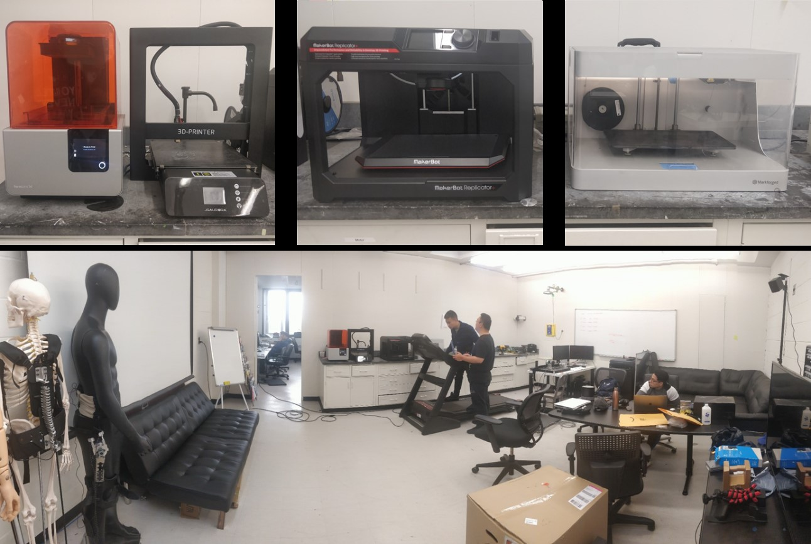
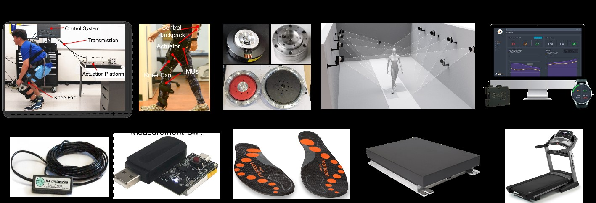

Facilities and Equipment
The CCNY Biomechatronics Laboratory is the lab established by PI Su. It is approximately 1500 sq. ft. suite located on the seventh floor of the Marshak Science Building on The City College of New York’s campus in Manhattan. It includes 3 office rooms, 1 workspace, and 1 experimental space. It is a facility for biomechanics and wearable robotics research. The lab has been instrumented with a heavy-duty treadmill, mobile motion capture system, mobile insole sensors, and state of the art 3D printers. Several exoskeleton prototypes have been developed for research on rehabilitation, mobility assistance, hand manipulation, and human augmentation, etc.

Computer
6 DELL desktops; 3 XPS DELL laptops, 2 Lenovo Thinkpad laptops.
Offices
3 Offices are available in the seventh floor of the Marshak Building.
EQUIPMENT AVAILABLE:
The following equipment is available for use in the project.

Prototyping Workshop
Full set of hardware instruments including CNC milling machine, advanced printing machine, laser cutting machine, and advanced circuit board prototyping machine. It can fully support the pneumatic and hydraulic actuator and inflatable exoskeleton manufacturing and testing, customized wearable fiberglass and Silica gel manufacture platform.
Advanced 3D Printers
One Makerbot 3D printer, one Formlabs 3D Printer, one Marforged 3D printer, can print ABS/PLA/Resin/Nylon/Onyx/Carbon Fiber/Kevlar.
Wearable Cable-Drive Exoskeletons
Four modular customized soft lower-limb exoskeletons for the back, hip, knee and ankle joints.
Hardware Electronic Platform
Full set of hardware electronic develop the platform, the equipment is including but not limited to, power supply, oscilloscope, signal generator, multimeter, soldering machine, heat gun, Gauss meter, and thermal imager.
Offboard Exoskeleton Test Platform
The platform mainly includes mechanical cable drive actuator platform, electronic sensors, I/O and communication board, and Simulink Desktop Real-Time based real-time control system.
Motion Capture System
One camera-based motion capture system (Qualisys, Inc.) includes 8 cameras, one wearable sensor-based motion capture system (Noitom, Inc.). The systems can be used for human biomechanical analysis and motion tracking.
Metabolic Measurement Device
A portable lightweight human walking metabolic estimation equipment (Goxlabs, Inc.)
Wireless Inertial Measurement Units (IMU)
A set of customized wireless IMU system includes 8 measurement nodes. 20 Individual IMU measurement nodes.
Foot Insole Sensors
One pair of Footswitches insole sensors (B&L Engineering, Inc.), two pair of pressure insole sensors (Podoon, Inc., Moticon, Inc.).
Electromyography (EMG) Measurement Units
Three customized wireless EMG measurement nodes, two commercial EMG measurement nodes (B&L engineering, Inc.).
Actuators
25 customized high torque density actuators with different specification, include high torque density motor, gear, motor driver, magnetic encoder and DSP 28335 based controller. 5 Maxon EC series flat motor (Maxon motor, Inc.), 3 commercial brushless high torque density motor (DJI, Inc., Tmotor, Inc.), 1 Yaskawa direct-drive motor, 30 DC/EC motor, driver and controller with different brands.
Torque and Force Measurement Sensors
Two loadcell (0~50Nm, Futek, Inc.), four customized loadcell (0~50Nm, 0~100Nm) and one 6-axis loadcell (Sunrise, Inc.), 20 force sensors (0~5kg).
Treadmill
One F63 sole treadmill.
Mannequin
Three test mannequins include complete nursing skills mannequin (Keri), Professional Dress Form Female mannequin (Fashion Display) and model mannequin.
Virtual Reality System
VIVE VR system (HTC, Inc) with development software and SDK.
Education Kits
12 customized modular Advanced Mechatronics Education Kits, 2 Festo pneumatic muscle education kits.
Biomechanical Analysis Software
Three biomechanical analysis software include Anybody, Biomechanics of Bodies (B.O.B) and OpenSim.